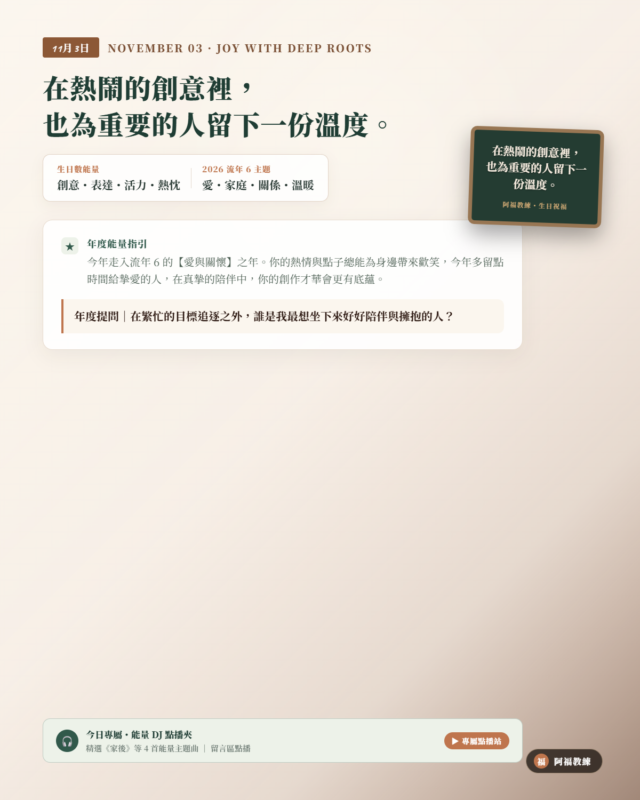

NOVEMBER 03 · JOY WITH DEEP ROOTS
11/03 壽星
生日快樂
「在熱鬧的創意裡，也為重要的人留下一份溫度。」
生日數 3（創意・表達・活力・熱忱）
2026 流年 6（愛・家庭・關係・溫暖）
生日數能量：創意・表達・活力・熱忱
流年 6 主題：愛・家庭・關係・溫暖
A YEAR OF SPECIAL MASTERY
把才華帶回心靈港灣，在真摯相伴中收穫長久幸福
今年走入流年 6 的【愛與關懷】之年。你的熱情與點子總能為身邊帶來歡笑，但今年宇宙想提醒你：最動人的創作，往往源自對重要之人的深刻理解。多留點時間給家與摯愛，把向外奔馳的心力收回一部分放在生活深處。在彼此扶持的厚實溫度裡，你的創意才華會長出最堅韌有底氣的根基。
年度提問｜「在繁忙的目標追逐之外，誰是我最想坐下來好好陪伴與擁抱的人？」
YOUR ENERGY DJ · 3 號人的流年 6 能量點播站
當熱情愛玩的 3 號人，走進承擔關懷的流年 6
身為天生點子多、熱愛向外發光的 3 號人，你習慣在歡聲笑語中展現才華；然而今年走入「流年 6」的愛與責任週期，宇宙給你的課題是「把心定下來，為重要的人留一盞燈」。當愛玩的靈魂遇上面對家庭、情感與責任的考驗，容易感到被束縛或心力耗竭。今天 DJ 特別為 3 號人的你精選流年 6 關懷歌單——溫柔接住你的浮躁、讓愛流動，讓你的才華在真情中更有深度！
LIFE NUMBER 6 · CLASSROOM PLAYLIST
6 號人課堂激勵與歡唱歌單（給 3 號人的流年 6 關懷歌單）
這份歌單來自阿福教練生命靈數課堂中，專為「愛與付出、關係修復與團隊陪伴」所調配的經典曲目。天生活力四射的 3 號壽星，在走入流年 6 的守護週期時，聽這 8 首歌，就像為熱鬧的創意注入溫潤泉水——讓才華不只帶來掌聲，更能溫暖身邊最重要的人！
- 01奉獻蘇芮｜主題開場・肯定付出與承擔，引導思考我想為所愛帶來怎樣的價值（YouTube 搜尋）
- 02姊妹張惠妹｜關係暖身・以支持與珍惜的溫暖氛圍，建立心靈無條件的信任（YouTube 搜尋）
- 03朋友周華健｜團隊合唱・強化可靠陪伴與深厚信任，歡唱中凝聚長久深情（YouTube 搜尋）
- 04溫柔五月天｜同理練習・學習傾聽與尊重，讓愛的付出不造成對方的壓力（YouTube 搜尋）
- 05家後江蕙｜責任照顧・以長期守護與深情相伴，連結 6 號人的核心底蘊（YouTube 搜尋）
- 06魚仔盧廣仲｜在乎的人・喚起對身邊重要之人的思念，化關心為具體行動（YouTube 搜尋）
- 07祝福張學友｜溫暖感謝・將服務與守護精神延伸為最真摯的祝福與支持（YouTube 搜尋）
- 08明天會更好群星｜共同收束・把個人關懷擴大成彼此照顧的溫暖承諾，攜手前行（YouTube 搜尋）
歌單依《生命靈數6號人_激勵九首與歡唱點播歌單》整理。點播連結均為 YouTube 官方影音搜尋結果；播放時請依授課場地與著作權規範使用。
願你的才華散發溫暖光彩，在愛與陪伴中收穫穩穩的幸福與滿足。
👉 11/03 壽星快來留言【🏡】！為新的一歲許下最棒的願望！
#11月3日生日快樂 #生命靈數 #生日數3 #流年6 #阿福教練